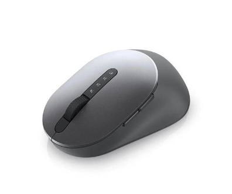
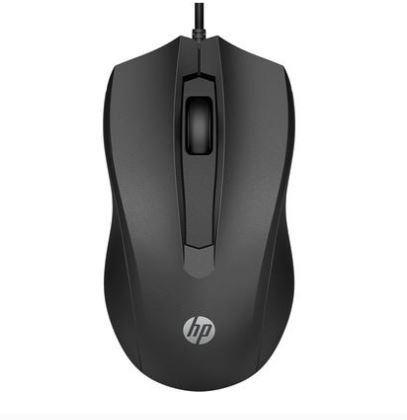

Este é um texto em negrito e itálico
Ele também pode ter subscrito e sobrescrito textos
Texto forte e ênfase são importantes
Isso é uma citação de bloco. Ela pode ser usada para enfatizar um trecho importante
Uma citação curta
é usada para citar algo relevante
ONU é uma sigla importante
Segundo o dicionário, vida
é a condição que distingue os seres orgânicos
HTML é uma linguagem usada para estruturar páginas web
Entre em contato pelo email: contato@exemplo.com
Cuidado com o passo em falso! E lembre-se de olhar antes de cruzar a rua
| Check | Foto | Código | Descrição | Qtd em estoque | Valor Unitário |
|---|---|---|---|---|---|
|
1 | Mouse Laser com fio Dell | 5 | R$ 179,00 | |
|  | 2 | Mouse Bluetooth Dell | 6 | R$ 338,00 | |
|  | 3 | Mouse óptico usb preto 100 | 3 | R$ 48,30 |